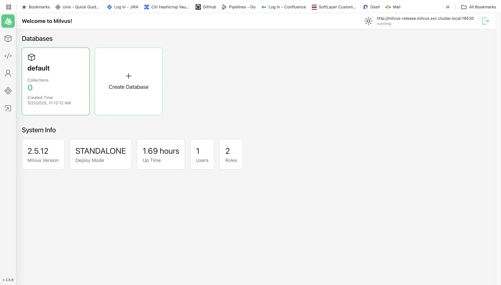

Setup Milvus Standalone in EKS with ALB Ingress#
Create a Namespace#
kubectl create namespace milvus
Add Milvus Helm Repo#
helm repo add milvus https://milvus-io.github.io/milvus-helm/
helm repo update
milvus-nlb-values.yaml#
milvus-nlb-values.yaml
cluster:
enabled: false
etcd:
replicaCount: 1
minio:
mode: standalone
pulsarv3:
enabled: false
service:
type: LoadBalancer
port: 19530
annotations:
service.beta.kubernetes.io/aws-load-balancer-type: external
service.beta.kubernetes.io/aws-load-balancer-name: milvus-service
service.beta.kubernetes.io/aws-load-balancer-scheme: internet-facing
service.beta.kubernetes.io/aws-load-balancer-nlb-target-type: ip
Install Milvus Standalone via Helm#
helm install milvus-release milvus/milvus \
--namespace milvus \
--create-namespace \
-f milvus-nlb-values.yaml
kubectl -n milvus get pod,svc,ingress
NAME READY STATUS RESTARTS AGE
pod/attu-5675f77748-c292g 1/1 Running 0 4h40m
pod/milvus-release-etcd-0 1/1 Running 0 12m
pod/milvus-release-minio-dc4957c7c-zd7lq 1/1 Running 0 12m
pod/milvus-release-standalone-c4c56cccf-bv9vx 1/1 Running 0 12m
NAME TYPE CLUSTER-IP EXTERNAL-IP PORT(S) AGE
service/attu ClusterIP 172.20.234.81 <none> 80/TCP 4h40m
service/milvus-release LoadBalancer 172.20.122.195 milvus-service-xxxxxxxxx.elb.ap-south-1.amazonaws.com 19530:32620/TCP,9091:30682/TCP 12m
service/milvus-release-etcd ClusterIP 172.20.190.137 <none> 2379/TCP,2380/TCP 12m
service/milvus-release-etcd-headless ClusterIP None <none> 2379/TCP,2380/TCP 12m
service/milvus-release-minio ClusterIP 172.20.139.189 <none> 9000/TCP 12m
NAME CLASS HOSTS ADDRESS PORTS AGE
ingress.networking.k8s.io/milvus-attu alb attu.visionaryai.aimledu.com k8s-milvus-milvusat-xxxxxx.ap-south-1.elb.amazonaws.com 80, 443 3h33m
Test#
nc -vz milvus-service-xxxxxx.elb.ap-south-1.amazonaws.com 19530
Connection to milvus-service-xxxx.elb.ap-south-1.amazonaws.com port 19530 [tcp/*] succeeded!
Test python#
from pymilvus import connections
try:
connections.connect(
alias="default",
host="milvus-service-b31a319c36663f78.elb.ap-south-1.amazonaws.com",
port="19530"
)
print("✅ Connected to Milvus!")
except Exception as e:
print(f"❌ Failed to connect to Milvus: {e}")
python testmilvus.py
✅ Connected to Milvus!
Install attu#
attu-deployment.yaml
apiVersion: apps/v1
kind: Deployment
metadata:
name: attu
namespace: milvus
spec:
replicas: 1
selector:
matchLabels:
app: attu
template:
metadata:
labels:
app: attu
spec:
containers:
- name: attu
image: zilliz/attu:v2.5
ports:
- containerPort: 3000
env:
- name: MILVUS_URL
value: http://milvus-release.milvus.svc.cluster.local:19530
attu-service.yaml
apiVersion: v1
kind: Service
metadata:
name: attu
namespace: milvus
spec:
type: ClusterIP
selector:
app: attu
ports:
- port: 80
targetPort: 3000
protocol: TCP
Install Ingress#
attu-ingress.yaml
apiVersion: networking.k8s.io/v1
kind: Ingress
metadata:
name: milvus-attu
annotations:
alb.ingress.kubernetes.io/scheme: internet-facing
alb.ingress.kubernetes.io/target-type: ip
alb.ingress.kubernetes.io/listen-ports: '[{"HTTPS":443}]'
alb.ingress.kubernetes.io/certificate-arn: arn:aws:acm:ap-south-1:777203855866:certificate/b78-98d0b00706ff
alb.ingress.kubernetes.io/ssl-redirect: '443'
alb.ingress.kubernetes.io/healthcheck-path: /
alb.ingress.kubernetes.io/load-balancer-attributes: idle_timeout.timeout_seconds=900
spec:
ingressClassName: alb
tls:
- hosts:
- attu.visionaryai.aimledu.com
rules:
- host: attu.visionaryai.aimledu.com
http:
paths:
- path: /
pathType: Prefix
backend:
service:
name: attu
port:
number: 80
kubectl apply -f attu-deployment.yaml -n milvus
kubectl apply -f attu-service.yaml -n milvus
kubectl apply -f attu-ingress.yaml -n milvus
kubectl -n milvus get pod,svc,ingress
NAME READY STATUS RESTARTS AGE
pod/attu-5675f77748-c292g 1/1 Running 0 115m
pod/milvus-release-etcd-0 1/1 Running 0 139m
pod/milvus-release-minio-dc4957c7c-q5dks 1/1 Running 0 139m
pod/milvus-release-standalone-c4c56cccf-bflrx 1/1 Running 0 139m
NAME TYPE CLUSTER-IP EXTERNAL-IP PORT(S) AGE
service/attu ClusterIP 172.20.234.81 <none> 80/TCP 115m
service/milvus-release ClusterIP 172.20.53.181 <none> 19530/TCP,9091/TCP 139m
service/milvus-release-etcd ClusterIP 172.20.39.67 <none> 2379/TCP,2380/TCP 139m
service/milvus-release-etcd-headless ClusterIP None <none> 2379/TCP,2380/TCP 139m
service/milvus-release-minio ClusterIP 172.20.129.162 <none> 9000/TCP 139m
NAME CLASS HOSTS ADDRESS PORTS AGE
ingress.networking.k8s.io/milvus-attu alb attu.xxxxxxx.xxxxx.com k8s-milvus-milvusat--727822688.ap-south-1.elb.amazonaws.com 80, 443 48m
nslookup attu.xxx.xxxxx 8.8.8.8
curl -k --resolve attu.xxx.xxxx.com:443:3.7.237.185 https://attu.xxxi.xxxx.com
/etc/hosts
3.7.237.185 attu.xxxx.axxxx.com
